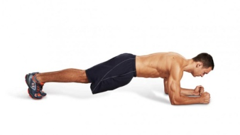
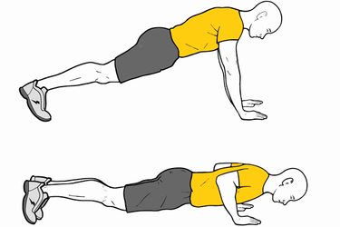
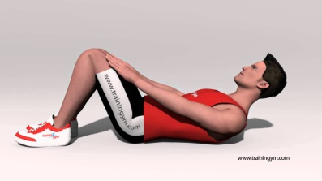
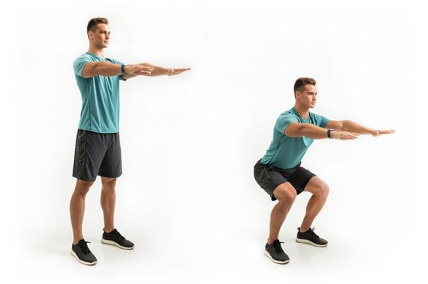
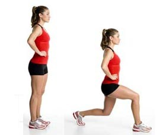

Activación articular a través de movimientos en diferentes arcos de movimiento. Realizar 20 repeticiones de cada ejercicio propuesto.
Iniciar con estos ejercicios por las primeras dos semanas.
Los ejercicios deben generar fatiga muscular (cansancio muscular) durante las ultimas repeticiones de cada serie.
Planchas: mantener apoyo sobre los antebrazos y los pies, elevando la parte central del cuerpo, mantener durante 15 segundos. Realizar 10 repetiones.
En la misma posición del ejercicio anterior (planchas), flexionar los codos, acercando el pecho a la superficie, realizar 3 series de 7 repeticiones.
Abdominales: mantener rodillas dobladas, manos sobre los muslos, subir hasta que las escapulas se despeguen de la superficie y las manos lleguen a las rodillas. Realizar 3 series de 10 repeticiones.
Sentadillas: pies separados al ancho de las caderas, espalda recta y brazos extendidos al frente, bajar flexionando las rodillas imitando el gesto de sentarse, al bajar la rodilla no debe superar la punta de los pies (rodillas y caderas forman un angulo de 90°). Realizar 3 series de 15 repeticiones.
Zancadas: de pie, manos en la cintura, piernas separadas al ancho de las caderas, dar un paso hacia adelante doblando la rodilla maximo 90°, manteniendo el tronco recto, la rodilla que queda atrás se flexiona acercandose al suelo y el pie queda apoyado solamente en la punta. Regresar a la posición inicial. Realizar 3 series de 10 repeticiones con cada pierna.
